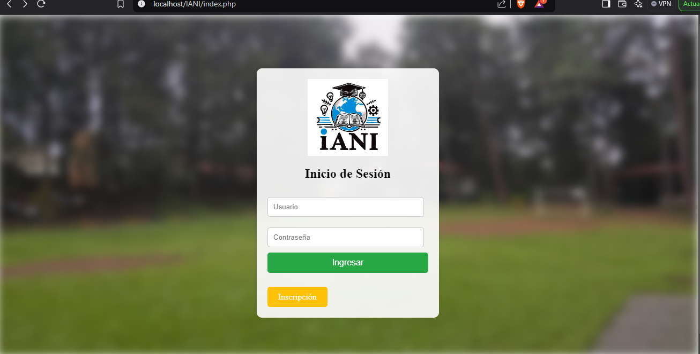
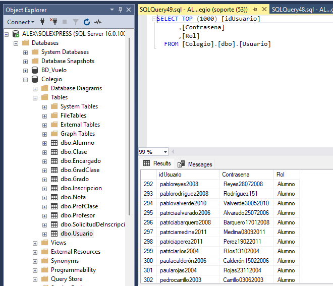
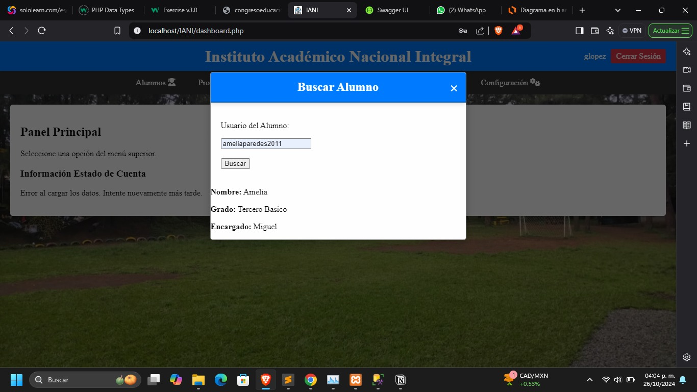

Bachiller en Ciencias y Letras con Orientación en Computación (2021) / Estudiante de Ingeniería en Sistemas y Ciencias de la Computación (4to. año)
📧 alexlopezposada@gmail.com
📞 +502 41085251
📍 3ª. Av. 1-180 Colonia San Gabriel Z. 5, Chimaltenango
Técnico en computación con práctica en mantenimiento de impresoras, red estructurada, PCs y asistencia técnica en Sistemas Operativos y Office 365. Habilidad para resolver problemas técnicos y brindar soporte eficiente, garantizando el correcto funcionamiento de sistemas y equipos, conocimiento básico Java, Python, SQL
• Habilidad para identificar y resolver problemas técnicos de manera eficiente.
• Capacidad para ajustarse rápidamente a nuevos entornos tecnológicos.
• Colaboración efectiva con otros técnicos y departamentos para resolver incidencias.
• Diagnóstico y solución de problemas técnicos.
• Organización y priorización efectiva de tareas.
Universidad Mariano Gálvez de Guatemala
2022- a la fecha
Instituto Evangélico América Latina
2020-2021
Instituto Evangélico América Latina
2010-2016
Piloto de Drones (Profesional) COQ 201
El día 8 de noviembre del año 2024
El programa de instrucciones cumplió con los requerimientos de la ley de aviación civil de Guatemala de la regla RAC 101 para ser operador comercial de drones, habiendo recibido capacitación como operador de radio y entrenamiento en UAV de nivel comercial acumulando 5 horas de vuelo, y pasó un examen teórico de vuelo
En este curso, se llevó a cabo el aprendizaje del lenguaje C++ a través de la plataforma web Azul School. Durante el desarrollo del curso, se realizaron diversos ejercicios prácticos y se abordaron conceptos desde el nivel básico hasta el avanzado, combinando teoría y práctica para una comprensión integral del lenguaje.
Mantenimiento y reparación de Equipo
• Mantenimiento Preventivo: Inspecciones regulares, limpieza de los componentes internos, y reemplazo de piezas que se desgastan.
• Diagnóstico de Problemas: Identificación de fallas, en impresoras atascos de papel, problemas de impresión, en red errores de conexión.
• Reparación: reparación de componentes eléctricos, arreglos mecánicos o software.
• Actualización de Software: Instalación de drivers y programas para garantizar la compatibilidad y rendimiento óptimo.
Instalación y configuración de redes estructuradas.
• Determinación de la ubicación de los cables y dispositivos
• Cableado que conectan los diferentes dispositivos en la red.
• Configuración de dispositivos: Ajuste de la configuración de switches, routers , CCTV para asegurar la correcta interconexión y funcionamiento en la red
• Seguridad: Implementación de medidas de seguridad, control de acceso
• Pruebas: Verificación del funcionamiento de la red mediante pruebas de conectividad y rendimiento.
• Documentación: Registro de la configuración, diseño y cambios realizados para facilitar el mantenimiento futuro.
En la Universidad se nos pidio realizar una pagina escolar la cual estuviera conectada a SQL con los usarios alumnos y cada uno tuviera sus credenciales de acceso y que la pagina mandara a llamar cada dato insertado para verificar su validez.
  El Sistema de Gestión de Inventarios para Pequeñas Empresas (SIGEPE) fue desarrollado con el objetivo de optimizar el control de productos en negocios locales, permitiendo una administración eficiente de stock, entradas y salidas de mercancía, y generación de reportes automatizados.
Frontend: HTML, CSS, JavaScript con Bootstrap
Backend: PHP con Laravel
Base de Datos: MySQL
Hosting: XAMPP para desarrollo local y Firebase para autenticación de usuarios